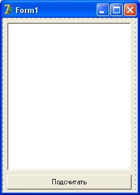

Управление циклами
Вы знаете уже практически все циклы – for..do, while..do, repeat..until.
Однако этими циклами можно еще и управлять.
Для этого служат директивы break и continue.
Break – прерывание цикла.
Если внутри цикла встретится такой оператор, происходит немедленный выход из цикла.
Как правило, этот оператор используют совместно с управляющей структурой if, например:
if a <> b then break;
Следовательно, если возникнет какое-то недопустимое для цикла условие, вы всегда имеете возможность прервать цикл досрочно.
Continue – прерывание текущего шага цикла.
В отличие от break, continue не прекращает цикл вовсе, а лишь прерывает дальнейшую обработку этого шага цикла, после чего цикл сразу начинается со следующего шага.
Способ применения такой же, как у break.
Рассмотрим работу continue на практическом примере.
Нам нужно разделить число 10 на число от -3 до 3 включительно, и результат вывести в ListBox.
Поскольку выводить будем также целые числа, нам поможет функция Round(), которая принимает вещественное число, округляет его до ближайшего целого и это целое возвращает.
Также мы знаем, что на ноль делить нельзя, это ошибка.
Для того, чтобы не допустить это деление, мы прервем этот шаг цикла с помощью директивы continue.
Создайте новое приложение.
Установите на форму ListBox, а под ним – кнопку:
При нажатии на кнопку, напишите следующий код:
procedure TForm1.Button1Click(Sender: TObject);
var
i, r : Integer;
begin
for i := -3 to 3 do begin
if i = 0 then begin
ListBox1.Items.Add('На ноль делить нельзя!');
Continue;
end; //if
r := Round(10/i);
ListBox1.Items.Add('10/'+IntToStr(i)+'='+IntToStr(r));
end; //for
end;
В тот момент, когда счетчик i станет равным 0, выполнится тело условия if, и после оператора Continue цикл сразу перейдет на новый виток, пропустив деление.